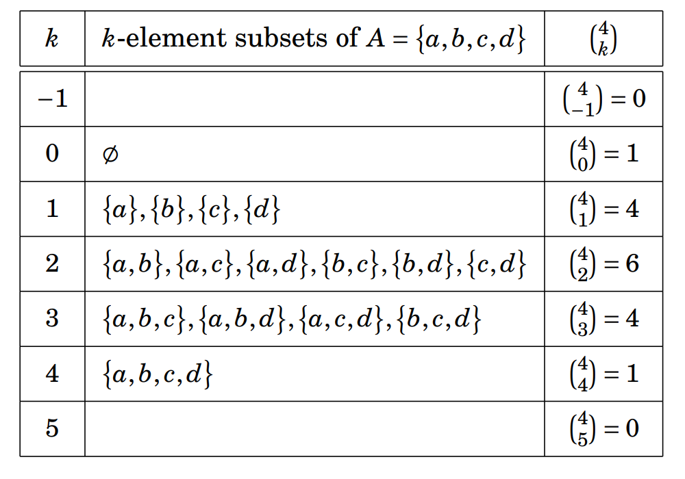
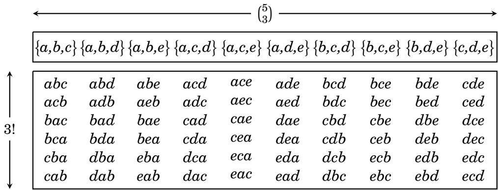
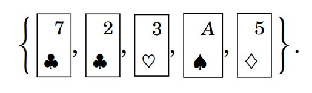
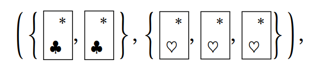
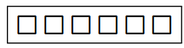

3.5 Counting Subsets¶
The previous section dealt with counting lists made by selecting \(k\) entries from a set of \(n\) elements. We turn now to a related question: How many subsets can be made by selecting \(k\) elements from a set with \(n\) elements? To see the difference between these two problems, take \(A = \{ a , b , c , d , e \}\). Consider the non-repetitive lists made from selecting two elements from \(A\). Fact 3.4 says there are \(P(5,2) = 5 \cdot 4 = 20\) such lists, namely \((a,b), (a,c), (a,d), (a,e), (b,c), (b,d), (b,e), (c,d), (c,e), (d,e), (b, a), (c, a), (d, a), (e, a), (c, b), (d, b), (e, b), (d, c), (e, c), (e, d)\). But there are only ten 2-element subsets of \(A\). They are \(\{a, b \}, \{a, c \}, \{a, d \}, \{a, e \}, \{b, c \}, \{b, d \}, \{b, e \}, \{c, d \}, \{c, e \}, \{d, e \}\). The reason that there are more lists than subsets is that changing the order of the entries of a list produces a different list, but changing the order of the elements of a set does not change the set. Using elements \(a , b \in A\), we can make two lists \((a,b)\) and \((b,a)\), but only one subset \(\left\{a,b\right\}\). This section is concerned with counting subsets, not lists. As noted above, the basic question is this: How many subsets can be made by choosing \(k\) elements from an \(n\)-element set? We begin with some notation that gives a name to the answer to this question.
Definition 3.2: If \(n\) and \(k\) are integers, then \(\displaystyle \binom{n}{k}\) denotes the number of subsets that can be made by choosing \(k\) elements from an \(n\)-element set. We read \(\displaystyle \binom{n}{k}\) as “\(n\) choose \(k\).” (Some textbooks write \(C(n,k)\) instead of \(\displaystyle \binom{n}{k}\).)
This is illustrated in the following table that tallies the \(k\)-element subsets of the 4-element set \(A = \{a,b,c,d\}\), for various values of \(k\).
{kind=link}

The values of \(k\) appear in the far-left column of the table. To the right of each \(k\) are all of the subsets (if any) of \(A\) of size \(k\). For example, when \(k = 1\), set \(A\) has four subsets of size \(k\), namely \(\{a\}, \{b\}, \{c\}\) and \(\{d\}\). Therefore \(\displaystyle \binom{4}{1} = 4\). When \(k = 2\) there are six subsets of size \(k\) so \(\displaystyle \binom{4}{2} = 6\). When \(k = 0\), there is only one subset of \(A\) that has cardinality \(k\), namely the empty set \(\varnothing\). Therefore \(\displaystyle \binom{4}{0} = 1\). Notice that if \(k\) is negative or greater than \(|A|\), then \(A\) has no subsets of cardinality \(k\), so \(\displaystyle \binom{4}{k} = 0\) in these cases. In general \(\displaystyle \binom{n}{k} = 0\) whenever \(k < 0\) or \(k > n\). In particular this means \(\displaystyle \binom{n}{k} = 0\) if \(n\) is negative.
Although it was not hard to work out the values of \(\displaystyle \binom{4}{k}\) by writing out subsets in the above table, this method of actually listing sets would not be practical for computing \(\displaystyle \binom{n}{k}\) when \(n\) and \(k\) are large. We need a formula. To find one, we will now carefully work out the value of \(\displaystyle \binom{5}{3}\) in a way that highlights a pattern that points the way to a formula for any \(\displaystyle \binom{n}{k}\). To begin, note that \(\displaystyle \binom{5}{3}\) is the number of 3-element subsets of \(\{a,b,c,d,e\}\). These are listed in the top row of the table below, where we see \(\displaystyle \binom{5}{3} = 10\). The column under each subset tallies the \(3! = 6\) permutations of that subset. The first subset \(\{a,b,c\}\) has \(3 ! = 6\) permutations; these are listed below it. The second column tallies the permutations of \(\{a,b,d\}\), and so on.

The body of this table has \(\displaystyle \binom{5}{3}\) columns and \(3!\) rows, so it has a total of \(\displaystyle 3! \cdot \binom{5}{3}\) lists. But notice also that the table consists of every 3-permutation of \(\{a,b,c,d,e\}\). Fact 3.4 says that there are \(P(5,3) = \dfrac{5!}{(5-3)!}\) such 3-permutations. Thus the total number of lists in the table can be written as either \(\displaystyle 3! \cdot \binom{5}{3}\) or \(\dfrac{5!}{(5-3)!}\). Dividing both sides by \(3!\) yields \(\displaystyle \binom{5}{3} = \dfrac {5!}{3! \cdot (5 - 3)!}\). Working this out, you will find that it does give the correct value of 10. But there was nothing special about the values 5 and 3. We could do the above analysis for any \(\displaystyle \binom{n}{k}\) instead of \(\displaystyle \binom{5}{3}\). The table would have \(\displaystyle \binom{n}{k}\) columns and \(k!\) rows. We would get
We have established the following fact, which holds for all \(k,n \in \mathbb{Z}\).
Fact 3.5: If \(0 \leq k \leq n\), then \(\displaystyle \binom{n}{k} = \dfrac{n!}{k! \cdot (n-k)!}\). Otherwise \(\displaystyle \binom{n}{k} = 0\).
Let’s now use our new knowledge to work some exercises.
Example 3.11: How many size-4 subsets does \(\{1,2,3,4,5,6,7,8,9\}\) have? The answer is \(\displaystyle \binom{9}{4} = \dfrac{9!}{4! \cdot (9-4)!} = \dfrac{9!}{4! \cdot 5!} = \dfrac{9 \cdot 8 \cdot 7 \cdot 6 \cdot 5!}{4! \cdot 5!} = \dfrac{9 \cdot 8 \cdot 7 \cdot 6}{4!} = \dfrac{9 \cdot 8 \cdot 7 \cdot 6}{24} = 126\). The number of non-repeating lists/permutations is \(\displaystyle \dfrac{9!}{(9-4)!} = 4! \cdot \binom{9}{4} = 3024\).
Example 3.12: How many 5-element subsets of \(A = \{1,2,3,4,5,6,7,8,9\}\) have exactly two even elements?
Solution: Making a 5-element subset of \(A\) with exactly two even elements is a 2-step process. First select two of the four even elements from \(A\). There are \(\displaystyle \binom{4}{2} = 6\) ways to do this. Next, there are \(\displaystyle \binom{5}{3} = 10\) ways select three of the five odd elements of \(A\). By the multiplication principle, there are \(\displaystyle \binom{4}{2} \cdot \binom{5}{3} = 6 \cdot 10 = 60\) ways to select two even and three odd elements from \(A\). So there are 60 5-element subsets of \(A\) with exactly two even elements.
Example 3.13: A single 5-card hand is dealt off of a standard 52-card deck. How many different 5-card hands are possible?
Solution: Think of the deck as a set \(D\) of 52 cards. Then a 5-card hand is just a 5-element subset of \(D\). There are many such subsets, such as 
{kind=link}
Example 3.14: This problem concerns 5-card hands that can be dealt off of a 52-card deck. How many such hands are there in which two of the cards are clubs and three are hearts?
Solution: Such a hand is described by a list of length two of the form 
{kind=link}
Example 3.15: A lottery features a bucket of 36 balls numbered 1 through 36. Six balls will be drawn randomly. For \(\$ 1\) you buy a ticket with six blanks: 
{kind=link}
Solution: In filling out the ticket you are choosing six numbers from a set of 36 numbers. Thus there are \(\displaystyle \binom{n}{k} = \binom{36}{6} = \dfrac{36!}{6! \cdot (36-6)!} = 1,947,792\) different combinations of numbers you might write. Only one of these will be a winner. Your chances of winning are one in 1,947,792. If the six number you pick need to be in the exact same order as they are drawn, then your chances of winning are one in 1,402,410,240: \(\dfrac{n!}{(n-k)!} = \dfrac{36!}{(36-6)!} = 1,402,410,240\).
Example 3.16: How many 7-digit binary strings (0010100, 1101011, etc.) have an odd number of 1’s?
Solution: Let \(A\) be the set of all 7-digit binary strings with an odd number of 1’s, so the answer will be \(|A|\). To find \(|A|\), we break \(A\) into smaller parts. Notice any string in \(A\) will have either one, three, five or seven 1’s. Let \(A_{1}\) be the set of 7-digit binary strings with only one 1. Let \(A_{3}\) be the set of 7-digit binary strings with three 1’s. Let \(A_{5}\) be the set of 7-digit binary strings with five 1’s, and let \(A_{7}\) be the set of 7-digit binary strings with seven 1’s. Then \(A = A_{1} \cup A_{3} \cup A_{5} \cup A_{7}\). Any two of the sets \(A_{i}\) have empty intersection, so the addition principle gives \(|A| = |A_{1}| + |A_{3}| + |A_{5}| + |A_{7}|\). Now we must compute the individual terms of this sum. Take \(A_{3}\), the set of 7-digit binary strings with three 1’s. Such a string can be formed by selecting three out of seven positions for the 1’s and putting 0’s in the other spaces. Thus \(\displaystyle |A_{3}| = \binom{7}{3}\). Similarly \(\displaystyle |A_{1}| = \binom{7}{1}\), \(\displaystyle A_{5} = \binom{7}{5}\), and \(\displaystyle |A_{7}| = \binom {7}{7}\). Answer: \(\displaystyle |A| = |A_{1}| + |A_{3}| + |A_{5}| + |A_{7}| = \binom{7}{1} + \binom{7}{3} + \binom{7}{5} + \binom{7}{7} = 7 + 35 + 21 + 1 = 64\). There are 64 7-digit binary strings with an odd number of 1’s.
Exercises for Section 3.5¶
Suppose a set A has 37 elements. How many subsets of A have 10 elements? How many subsets have 30 elements? How many have 0 elements?
Answer
\(\displaystyle \binom{37}{10} = \dfrac{37!}{10! \cdot (37-10)!} = \dfrac{37 \cdot 36 \cdot 35 \cdot 34 \cdot 33 \cdot 32 \cdot 31 \cdot 30 \cdot 29 \cdot 28 \cdot 27!}{10! \cdot 27!} = 348,330,136\)
\(\displaystyle \binom{37}{30} = \dfrac{37!}{30! \cdot (37-30)!} = \dfrac{37 \cdot 36 \cdot 35 \cdot 34 \cdot 33 \cdot 32 \cdot 31 \cdot 30!}{30! \cdot 7!} = 10,295,472\)
\(\displaystyle \binom{37}{0} = \dfrac{37!}{0! \cdot (37-0)!} = \dfrac{37!}{37!} = 1\)
Suppose \(A\) is a set for which \(|A| = 100\). How many subsets of \(A\) have 5 elements? How many subsets have 10 elements? How many have 99 elements?
Answer
\(\displaystyle \binom{100}{5} = \dfrac{100!}{5! \cdot (100-5)!} = \dfrac{100 \cdot 99 \cdot 98 \cdot 97 \cdot 96 \cdot 95!}{5! \cdot 95!} = 75,287,520\)
\(\displaystyle \binom{100}{10} = \dfrac{100!}{10! \cdot (100-10)!} = \dfrac{100 \cdot 99 \cdot 98 \cdot 97 \cdot 96 \cdot 95 \cdot 94 \cdot 93 \cdot 92 \cdot 91 \cdot 90!}{10! \cdot 90!} = 17,310,309,456,440\)
\(\displaystyle \binom{100}{99} = \dfrac{100!}{99! \cdot (100-99)!} = \dfrac{100 \cdot 99!}{99! \cdot 1!} = 100\)
A set \(X\) has exactly 56 subsets with 3 elements. What is the cardinality of \(X\)? 🔴
Answer
The answer will be the \(n\) for which \(\displaystyle \binom{n}{3} = 56\). After some trial and error, you will discover \(\displaystyle \binom{8}{3} = 56\), so \(|X|=8\). \(\displaystyle \binom{|X|}{3} = \dfrac{|X|!}{3! \cdot (|X|-3)!} = 56\). \(\displaystyle \dfrac{|X|!}{(|X|-3)!} = P(|X|,3) = 3! \cdot 56 = 336\). Factorize \(336 = 2^{4} \cdot 3 \cdot 7 = 8 \cdot 7 \cdot 6\). This means \(|X| = 8\).
Suppose a set \(B\) has the property that \(\left| \left\{X : X \in \mathscr{P}(B), | X | = 6 \right\} \right| = 28\). Find \(|B|\). 🔴
Answer
\(\displaystyle \binom{|B|}{6} = \dfrac{|B|!}{6! \cdot (|B|-6)!} = 28\). \(\displaystyle \dfrac{|B|!}{(|B|-6)!} = P(|B|,6) = 6! \cdot 28 = 20,160\). Factorize \(20,160 = 2^{6} \cdot 3^{2} \cdot 5 \cdot 7 = 8 \cdot 7 \cdot 6 \cdot 5 \cdot 4 \cdot 3\). This means \(|B| = 8\). \(\mathscr{P}(B) = 2^{|B|} = 2^{8} = 256\).
How many 16-digit binary strings contain exactly seven 1’s? (Examples of such strings include \(0111000011110000\) and \(0011001100110010\), etc.)
Answer
Make such a string as follows: start with a list of 16 blank spots. Choose 7 of the blank spots for the 1’s and put 0’s in the other spots. There are 11,440 ways to do this. \(\displaystyle \binom{16}{7} = \dfrac{16!}{7! \cdot (16-7)!} = \dfrac{16 \cdot 15 \cdot 14 \cdot 13 \cdot 12 \cdot 11 \cdot 10 \cdot 9!}{7! \cdot 9!} = 11,440\)
\(\left| \left\{ X \in \mathscr{P}(\left\{ 0 , 1 , 2 , 3 , 4 , 5 , 6 , 7 , 8 , 9 \right\}) : | X | = 4 \right\} \right| =\)
Answer
\(\displaystyle \binom{10}{4} = \dfrac{10!}{4! \cdot (10-4)!} = \dfrac{10 \cdot 9 \cdot 8 \cdot 7 \cdot 6!}{4! \cdot 6!} = 210\)
\(\left| \left\{ X \in \mathscr{P}(\left\{ 0 , 1 , 2 , 3 , 4 , 5 , 6 , 7 , 8 , 9 \right\}) : | X | < 4 \right\} \right| =\) 🔴
Answer
\(\displaystyle \binom{10}{3} = \dfrac{10!}{3! \cdot (10-3)!} = \dfrac{10 \cdot 9 \cdot 8 \cdot 7!}{3! \cdot 7!} = 120\)
\(\displaystyle \binom{10}{2} = \dfrac{10!}{2! \cdot (10-2)!} = \dfrac{10 \cdot 9 \cdot 8!}{2! \cdot 8!} = 45\)
\(\displaystyle \binom{10}{1} = \dfrac{10!}{1! \cdot (10-1)!} = \dfrac{10 \cdot 9!}{1! \cdot 9!} = 10\)
\(\displaystyle \binom{10}{0} = \dfrac{10!}{0! \cdot (10-0)!} = \dfrac{10!}{10!} = 1\)
By the addition principle, \(\displaystyle \left| \left\{ X \in \mathscr{P}(\left\{ 0 , 1 , 2 , 3 , 4 , 5 , 6 , 7 , 8 , 9 \right\}) : | X | < 4 \right\} \right| = \binom{10}{3} + \binom{10}{2} + \binom{10}{1} + \binom{10}{0} = 120 + 45 + 10 + 1 = 176\)
This problem concerns lists made from the symbols \(A, B, C, D, E, F, G, H, I\). (a) How many length-5 lists can be made if there is no repetition and the list is in alphabetical order? (Example: \(BDEFI\) or \(ABCGH\), but not \(BACGH\).) 🔴
Answer
Binomial coefficients count unordered selections, but here each unordered selection determines exactly one allowed ordered list, because there is a one-to-one match between: (1) a 5-element subset of \(\{A, B, C, D, E, F, G, H, I\}\) and (2) a length-5 list with no repetition written in alphabetical order. For example, take the subset \(\{B,D,E,F,I\}\), then there is exactly one alphabetical list you can make from it: \(BDEFI\). If order were arbitrary, the subset \(\{B,D,E,F,I\}\) could give many lists: \(BDEFI\), \(IFDEB\), \(DEBIF\), etc. But with the condition “in alphabetical order,” only one of those is allowed: \(BDEFI\). You do not get multiple alphabetical arrangements from the same subset, because once the letters are required to be in alphabetical order, the order is forced. \(\displaystyle \binom{9}{5} = \dfrac{9!}{5! \cdot (9-5)!} = \dfrac{9 \cdot 8 \cdot 7 \cdot 6 \cdot 5!}{5! \cdot 4!} = 126\)
(b) How many length-5 lists can be made if repetition is not allowed and the list is not in alphabetical order? 🔴
Answer
With no repetition, the total number of length-5 lists is \(\displaystyle P(9,5) = \dfrac{9!}{(9-5)!} = 15,120\). The question says the list is not in alphabetical order, so the 126 alphabetical lists must be excluded from this total. By the subtraction principle, the number of length-5 lists that can be made if repetition is not allowed and the list is not in alphabetical order is \(15,120-126 = 14,994\).
This problem concerns lists of length 6 made from the letters \(A , B , C , D , E , F\) without repetition. How many such lists have the property that the \(D\) occurs before the \(A\)? 🔴
Answer
Make such a list as follows. Begin with six blank spaces and select two of these spaces. Put the \(D\) in the first selected space and the \(A\) in the second. There are \(\displaystyle \binom{6}{2} = 15\) ways of doing this. For each of these 15 choices there are \(4! = 24\) ways of filling in the remaining spaces. Thus the answer to the question is \(15 \cdot 24 = 360\) such lists.
A department consists of 5 men and 7 women. From this department you select a committee with 3 men and 2 women. In how many ways can you do this?
Answer
\(\displaystyle \binom{5}{3} \cdot \binom{7}{2} = \dfrac{5!}{3! \cdot (5-3)!} \cdot \dfrac{7!}{2! \cdot (7-2)!} = \dfrac{5 \cdot 4 \cdot 3!}{3! \cdot 2!} \cdot \dfrac{7 \cdot 6 \cdot 5!}{2! \cdot 5!} = \dfrac{5 \cdot 4}{2!} \cdot \dfrac{7 \cdot 6}{2!} = 10 \cdot 21 = 210\)
How many positive 10-digit integers contain no 0’s and exactly three 6’s? 🔴
Answer
Make such a number as follows: start with 10 blank spaces and choose three of these spaces for the 6’s. There are \(\displaystyle \binom{10}{3} = \dfrac{10!}{3! \cdot (10-3)!} = \dfrac{10 \cdot 9 \cdot 8 \cdot 7!}{3! \cdot 7!} = 120\) ways of doing this. For each of these 120 choices we can fill in the remaining seven blanks with choices from the digits in \(\{1,2,3,4,5,7,8,9\}\), and there are \(8^{7}\) ways to do this. Thus the answer to the question is \(\displaystyle \binom{10}{3} \cdot 8^{7} = 251,658,240\).
Twenty-one people are to be divided into two teams, the Red Team and the Blue Team. There will be 10 people on Red Team and 11 people on Blue Team. In how many ways can this be done?
Answer
\(\displaystyle \binom{21}{10} = \binom{21}{11}\) counts the same split from opposite perspectives: choose the 10 people who will be on the Red Team, then the remaining 11 people automatically go to the Blue Team. You could also choose the 11 people for Blue Team, then the remaining 10 people automatically go to the Red Team. These are equivalent ways to count the ways requested. \(\displaystyle \binom{21}{10} = \dfrac{21!}{10! \cdot (21-10)!} = \dfrac{21 \cdot 20 \cdot 19 \cdot 18 \cdot 17 \cdot 16 \cdot 15 \cdot 14 \cdot 13 \cdot 12 \cdot 11!}{10! \cdot 11!} = 352,716\) \(\displaystyle \binom{21}{11} = \dfrac{21!}{11! \cdot (21-11)!} = \dfrac{21 \cdot 20 \cdot 19 \cdot 18 \cdot 17 \cdot 16 \cdot 15 \cdot 14 \cdot 13 \cdot 12 \cdot 11!}{11! \cdot 10!} = 352,716\)
Suppose \(n, k \in \mathbb{Z}\), and \(0 \leq k \leq n\). Use Fact 3.5, the formula \(\displaystyle \binom{n}{k} = \frac{n!}{k! \cdot (n-k)!}\), to show that \(\displaystyle \binom{n}{k} = \binom{n}{n-k}\).
Answer
Fact 3.5: If \(0 \leq k \leq n\), then \(\displaystyle \binom{n}{k} = \dfrac{n!}{k! \cdot (n-k)!}\). Otherwise \(\displaystyle \binom{n}{k} = 0\). \(\displaystyle \binom{n}{k} = \frac{n!}{k! \cdot (n-k)!} = \frac{n!}{(n-k)! \cdot k!} = \frac{n!}{(n-k)! \cdot (n-(n-k))!} = \binom{n}{n-k}\)
Suppose \(n, k \in \mathbb{Z}\), and \(0 \leq k \leq n\). Use Definition 3.2 alone (without using Fact 3.5) to show that \(\displaystyle \binom{n}{k} = \binom{n}{n-k}\). 🔴
Answer
Definition 3.2: If \(n\) and \(k\) are integers, then \(\displaystyle \binom{n}{k}\) denotes the number of subsets that can be made by choosing \(k\) elements from an \(n\)-element set. We read \(\displaystyle \binom{n}{k}\) as “\(n\) choose \(k\).” Some textbooks write \(C(n,k)\) instead of \(\displaystyle \binom{n}{k}\). Let \(S\) be an \(n\)-element set. By Definition 3.2, \(\displaystyle \binom{n}{k}\) is the number of \(k\)-element subsets of \(S\), and \(\displaystyle \binom{n}{n-k}\) is the number of \((n−k)\)-element subsets of \(S\). For every \(k\)-element subset \(A \subseteq S\), its complement \(S - A\) has exactly \(n−k\) elements. So each \(k\)-element subset corresponds exacly to one \((n-k)\)-element subset, namely it’s complement. Conversely, every \((n-k)\)-element subset is the complement of exactly one \(k\)-element subset. This gives a one-to-one correspondence between \(k\)-element subsets and \((n−k)\)-element subsets. Therefore, \(\displaystyle \binom{n}{k} = \binom{n}{n-k}\).
How many 10-digit binary strings are there that do not have exactly four 1’s?
Answer
All together, there are \(|A| = 2^{10} = 1024\) different 10-digit binary strings. The number of 10-digit binary strings with exactly four 1’s is \(\displaystyle |A_{4}| = \binom{10}{4} = \frac{10!}{4! \cdot (10-4)!} = \frac{10 \cdot 9 \cdot 8 \cdot 7 \cdot 6!}{4! \cdot 6!} = 210\), because to make one we need to choose 4 out of 10 positions for the 1’s and fill the rest in with 0’s. By the subtraction principle, the answer to our questions is \(|A - A_{4}| = 1024-210 = 814\).
How many 6-element subsets of \(A = \left\{ 0 , 1 , 2 , 3 , 4 , 5 , 6 , 7 , 8 , 9 \right\}\) have exactly three even elements? How many do not have exactly three even elements?
Answer
Note that \(0\) is an even number, because it is divisible by \(2\) and there is no remainder in the result: \(0 \div 2 = 0\). The set \(A = \{ 0 , 1 , 2 , 3 , 4 , 5 , 6 , 7 , 8 , 9\}\) has five even elements \(\{0,2,4,6,8\}\) and five odd elements \(\{1,3,5,7,9\}\). To form a 6-element subset with exactly three even elements, you must choose 3 of the 5 evens, and 3 of the 5 odds, so the number of 6-element subsets that have exactly three even elements is: \(\displaystyle \binom{5}{3} \cdot \binom{5}{3} = 10 \cdot 10 = 100\). The total number of 6-element subsets is \(\displaystyle \binom{10}{6} = \frac{10!}{6! \cdot (10-6)!} = \frac{10 \cdot 9 \cdot 8 \cdot 7 \cdot 6!}{6! \cdot 4!} = 210\), so by the subtraction principle, there are \(210-100=110\) 6-element subsets that do not have exactly three even elements.
How many 10-digit binary strings are there that have exactly four 1’s or exactly five 1’s? How many do not have exactly four 1’s or exactly five 1’s?
Answer
\(\displaystyle |A_{4}| = \binom{10}{4} = \frac{10!}{4! \cdot (10-4)!} = \frac{10 \cdot 9 \cdot 8 \cdot 7 \cdot 6!}{4! \cdot 6!} = 210\) \(\displaystyle |A_{5}| = \binom{10}{5} = \frac{10!}{5! \cdot (10-5)!} = \frac{10 \cdot 9 \cdot 8 \cdot 7 \cdot 6 \cdot 5!}{5! \cdot 5!} = 252\) By the addition principle there are \(\displaystyle |A_{4} + A_{5}| = \binom{10}{4} + \binom{10}{5} = 210 + 252 = 462\) 10-digit binary strings are there that have exactly four 1’s or exactly five 1’s. All together, there are \(|A| = 2^{10} = 1024\) different 10-digit binary strings. By the subtraction principle combined with the answer to the first part of this problem, the answer is \(\displaystyle 2^{10} - \binom{10}{4} - \binom{10}{5} = 1024 - 462 = 562\).
How many 10-digit binary strings have an even number of 1’s? 🔴
Answer
Let \(A_k\) be the set of 10-digit binary strings with exactly \(k\) ones. A binary string has an even number of 1’s when \(k=0,2,4,6,8,10\). \(\displaystyle |A_{0}| = \binom{10}{0} = \frac{10!}{0! \cdot (10-0)!} = \frac{10!}{10!} = 1\) \(\displaystyle |A_{2}| = \binom{10}{2} = \frac{10!}{2! \cdot (10-2)!} = \frac{10 \cdot 9 \cdot 8!}{2! \cdot 8!} = 45\) \(\displaystyle |A_{4}| = \binom{10}{4} = \frac{10!}{4! \cdot (10-4)!} = \frac{10 \cdot 9 \cdot 8 \cdot 7 \cdot 6!}{4! \cdot 6!} = 210\) \(\displaystyle |A_{6}| = \binom{10}{6} = \frac{10!}{6! \cdot (10-6)!} = \frac{10 \cdot 9 \cdot 8 \cdot 7 \cdot 6!}{6! \cdot 4!} = 210\) \(\displaystyle |A_{8}| = \binom{10}{8} = \frac{10!}{8! \cdot (10-8)!} = \frac{10 \cdot 9 \cdot 8!}{8! \cdot 2!} = 45\) \(\displaystyle |A_{10}| = \binom{10}{10} = \frac{10!}{10! \cdot (10-10)!} = \frac{10!}{10!} = 1\) By the addition principle, there are \(|A_{0}| + |A_{2}| + |A_{4}| + |A_{6}| + |A_{8}| + |A_{10}| = 1+45+210+210+45+1 = 512\) 10-digit binary strings that have an even number of 1’s.
A 5-card poker hand is called a flush if all cards are the same suit. How many different flushes are there?
Answer
There are \(\displaystyle \binom{13}{5} = \frac{13!}{5! \cdot (13-5)!} = \frac{13 \cdot 12 \cdot 11 \cdot 10 \cdot 9 \cdot 8!}{5! \cdot 8!} = 1287\) 5-card hands that are all hearts. Similarly, there are \(\displaystyle \binom{13}{5} = 1287\) 5-card hands that are all diamonds, or all clubs, or all spades. By the addition principle, there are then \(1287 + 1287 + 1287 + 1287 = 5148\) flushes.